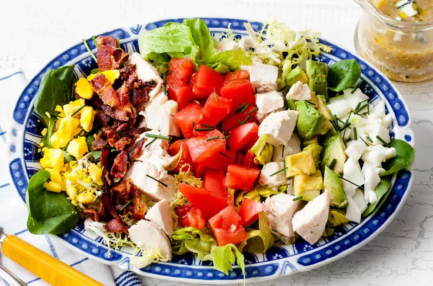

Cobb Salad

Description
Classic American Cobb salad, a composed salad with bacon, avocado, chicken breast, tomato, hard boiled egg, chives, arranged on a bed of romaine, Boston, frisée lettuce and watercress.
Ingredients
- 1⁄2 head romaine
- 1⁄2 head Boston lettuce
- 1⁄2 bunch watercress, coarse stems discarded
- 6 slices bacon
- 2 ripe avocados, seeds removed, peeled, and cut into 1⁄2 inch pieces
- 1 whole skinless boneless chicken breast
- 1 tomato, seeded and chopped fine
- 2 hard-boiled eggs
- 4 cups tomato juice
- 1⁄3 cup red wine vinegar
- 2 tablespoons chopped fresh chives
- tablespoon Dijon-style mustard
- 1 to 2 teaspoons sugar
- Salt and pepper
- 2⁄3 cup extra virgin olive oil
- 1⁄2 cup finely grated Roquefort
Steps
- in a skillet on medium heat until crisp on both sides. Remove from skillet and lay out on paper towels to absorb the excess fat. Allow the bacon to cool. Crumble the bacon and set aside.
- In a large salad bowl, toss together well the various lettuces and watercress.
- Arrange the chicken, the bacon, the tomato, and the avocado decoratively over the greens and garnish the salad with the chopped egg and the chives.
- In a small bowl whisk together the vinegar, the mustard, and salt and pepper to taste, add the oil in a slow stream, whisking, and whisk the dressing until it is emulsified.
- Stir in the Roquefort. Add sugar to taste, 1/2 teaspoon at a time. Whisk the dressing. Serve separately or toss in with the salad.